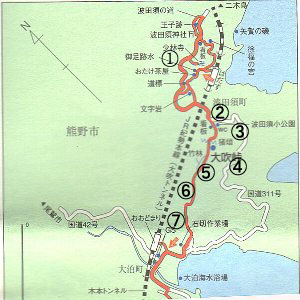
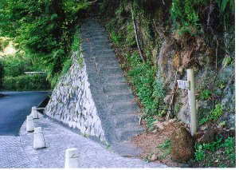
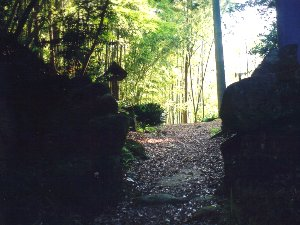

紀伊の古道 | ２００３年５月２日or３日 |
|---|---|
| ここはSUGARが行った古道を紹介します。 三重県熊野市にある熊野古道（伊勢路）に行ってきました。 ②の入口から⑦の終点まで約１時間ぐらい。 | |
|  地図です（見れば分かるか） |  ①波田須の古道 古道の中でももっとも古い。 コケの生え具合が良。道路より５分で到着。 |
|  ②大吹峠 入口 駐車場、WC有り。 入口は滑りやすいので注意！案内有り。 |  ③大吹峠 途中 石畳が続いている。普通の山道 |
|  ④大吹峠 峠 岩の壁の隙間を通り抜ける。 猪よけだそうだ。入口より３０分弱。達成感有り。 |  ⑤大吹峠 竹林 ここが一番のお勧めPOINT! メチャ綺麗です！ |
 ⑥大吹峠 途中 普通の山道。 途中小川の流れる音が聞こえる。小川にも降りることが出来る。 |  ⑦大吹峠 石切場 山を見上げた感じ。 コースの終点。 |